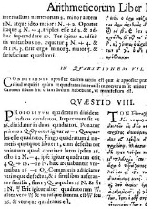

1637’de matematikçi Pierre de Fermat, Arithetica adlı kitabın kopyasının kenarına yazdığı gizemli bir notta, ‘n 2’den büyük ve x, y, z ve n pozitif tamsayılar olmak koşuluyla xⁿ + yⁿ = zⁿ’ denkleminin çözümünün olmadığını belirtti. Bu iddia için “gerçekten mükemmel bir ispatı” vardı, ama onu yazmak için kenarda yeteri kadar boş alanı yoktu.

Herhangi bir kişinin bildiği kadarı ile Fermat, asla ispatını bir yere kaydetmedi. Matematikçiler, yüzyıllarca bunu tekrar bulabilmeyi defalarca denediler. Diğerleri, Fermat’ın bunu ilk anda ispat edip etmediğinden şüpheye düşerek teoremi kendileri çözmeye çalıştılar. Bazıları, bunun imkansız olduğuna inanarak denemeyi bıraktılar. Yazdığı son teorem olmasından dolayı değil, ama asla doğrulanamayan tek teoremi olmasından dolayı Fermat’ın son teoremi olarak bilindi.
‘x²+y²=z²’ denklemini çözen x, y ve z tam sayıları olduğu iyi bilinir. Pisagor üçlüleri olarak da bilinirler ve sayısız böyle rakam vardır.
Örneğin 3,4 ve 5’i alalım.
3²+4²=5²
9+16=25
Ama bu durum x³+y³=z³ (n=3) veya x⁴+y⁴=z⁴ (n=4) olduğunda geçerli değildir. Bu denklemlerde n’nin özel durumları birçok kere ispatlanmasına rağmen, n’nin 2’den büyük herhangi bir sayıya eşit olabildiğini ispatlamak insanın 357 senesini aldı.
Cevap, 1995’te Princeton Üniversitesi’nden Profesör Andrew Wiles’tan geldi. Matematiğin, meşhur eliptik eğrilerinin ve modüler formlarının görünürde bağlantısız dallarını birleştirerek, nesillerdir matematikçilerin kafasını kurcalayan problemi çözen 150 sayfalık bir ispat yazdı. Wiles, Fermat’ın o zamanlar bilemeyeceği birçok yirminci yüzyıl tekniğini kullandı. Bu nedenden dolayı Wiles, Fermat’ın bu teoremi asla ispat etmediğine inanır.
EK BİLGİLER:
1. Wiles, on yaşındayken Fermat’ın son teoremine kafayı takmaya başladı. Her zaman, teoremi ispat etmenin kendi kaderi olduğuna inandı.
2. Yaşamının sonlarında Fermat, n=4 olduğu özel durumun bir ispatını yazdı. Pek çok matematikçi, onun gerçekten de 2’den büyük tüm n’ler için olan genel durumu ispat etmiş olsaydı, n=4 için olan özel durumu yazmak için uğraşma ihtiyacı duymayacağı tahmininde bulunurlar. Bunu, Fermat’ın teoremini asla ispat etmediğinin daha ileri bir kanıtı olarak ele alırlar.